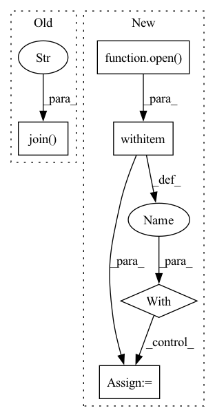

Pattern ID :30057
Before Change
experiment_dir = os.path.dirname(os.path.realpath(__file__))
params_file = os.path.join(experiment_dir, "hyperparams.yaml")
sourcesep_samples_dir = os.path.realpath(
os.path.join(
experiment_dir,
"..",
"..",
".." ,
"..",
"samples",
"audio_samples",
"sourcesep_samples",
)
)
with open(params_file) as fin:
hparams = sb.yaml.load_extended_yaml(After Change
data_folder = (experiment_dir / data_folder).resolve()
// Load model hyper parameters:
with open(hparams_file) as fin:
hparams = sb.load_extended_yaml(fin)
// Dataset creation
train_data, valid_data = data_prep(data_folder, hparams)In pattern: SUPERPATTERN
Frequency: 3
Non-data size: 5
Instances Fragment ID: 89213027
Project Name: speechbrain/speechbrain
Commit Name: c9b83509f0a07e61ef75f23e359eec163c98ad12
Time: 2020-12-26
Author: mirco.ravabelli@gmail.com
File Name: recipes/minimal_examples/neural_networks/separation/example_conv_tasnet.py
M Class Name: AnonimousClass
N Class Name: AnonimousClass
M Method Name: main(0)
N Method Name: main(0)
M Parent Class:
N Parent Class:
M File Name: recipes/minimal_examples/neural_networks/separation/example_conv_tasnet.py
N File Name: recipes/minimal_examples/neural_networks/separation/example_conv_tasnet.py
M Start Line: 153
M End Line: 189
N Start Line: 130
N End Line: 153
Before Change
text: Optional[bool] = False,
refresh: Optional[int] = 0,
):
return send_logs(os.path.join( settings.MONAI_LABEL_APP_DIR, "logs" , str(logfile)) , lines, html, text, refresh)
@router.get("/gpu", summary="Get GPU Info (nvidia-smi)")After Change
refresh = max(refresh, 3) if refresh else 0
if lines > 0:
with open(logger_file) as fin:
response_lines = list(deque(fin, lines))
if html and not text:
response = HTML_TEMPLATE.replace("LINES_T", str(lines))
response = response.replace(
"REFRESH_T",
"setInterval(fetch, 1000*" + str(refresh) + ");" if refresh else "",
)
response_type = "text/html"
else:
response = "".join(response_lines)
response_type = "text/plain"
return Response(content=response, media_type=response_type)
return FileResponse(logger_file, media_type="text/plain") Fragment ID: 89213030
Project Name: project-monai/monailabel
Commit Name: 43205ec573b89ac09b512ba88bc2c2211ba3099b
Time: 2021-11-04
Author: sachidanand.alle@gmail.com
File Name: monailabel/endpoints/logs.py
M Class Name: AnonimousClass
N Class Name: AnonimousClass
M Method Name: get_logs(5)
N Method Name: get_logs(5)
M Parent Class:
N Parent Class:
M File Name: monailabel/endpoints/logs.py
N File Name: monailabel/endpoints/logs.py
M Start Line: 92
M End Line: 98
N Start Line: 68
N End Line: 87
Before Change
images = []
if read_cache:
possible_filelist = os.path.join( dir, "files.list" )
if os.path.isfile(possible_filelist):
with open(possible_filelist, "r") as f:
images = f.read().splitlines()
return imagesAfter Change
images = []
if meta_path is not None:
with open(meta_path, "r") as f:
lines = f.readlines()
from tqdm import tqdm
for line in tqdm(lines):
line = line.strip() Fragment ID: 89213037
Project Name: mit-han-lab/gan-compression
Commit Name: 788f6907d955559d0539fc54acea0e0102e4a6eb
Time: 2021-01-11
Author: lmxyy1999@foxmail.com
File Name: data/image_folder.py
M Class Name: AnonimousClass
N Class Name: AnonimousClass
M Method Name: make_dataset(5)
N Method Name: make_dataset(5)
M Parent Class:
N Parent Class:
M File Name: data/image_folder.py
N File Name: data/image_folder.py
M Start Line: 33
M End Line: 60
N Start Line: 33
N End Line: 55